This procedure describes how to configure the Bird TT800V wattmeter to measure maximum forward power.
Procedure
- Press the power button on the top right section of the Bird TT800V wattmeter unit to turn on the wattmeter.
Figure 1. Bird TT800V wattmeter power button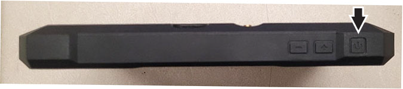
- Plug the M5014G sensor into the USB port located on the right side of the wattmeter.
Figure 2. Bird TT800V wattmeter connected to the M5014G sensor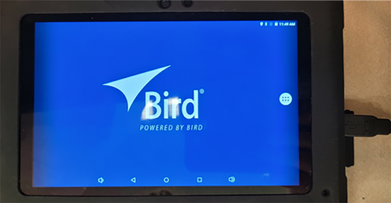
Result
The application should automatically open after plugging in the sensor and show a list of available sensors.
- Select the M5014G sensor.
Figure 3. Selecting M5014G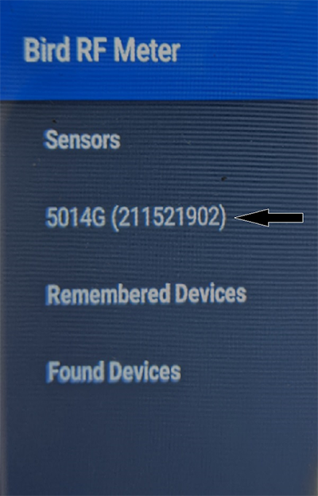
- Click the ellipsis on the top right corner of the screen and select Sensor Mode.
Figure 4. Selecting Sensor Mode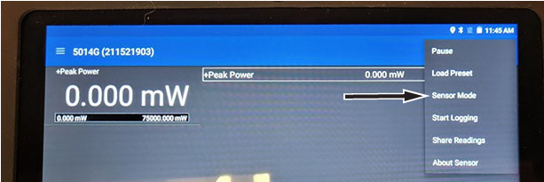
- Select 43 Peak.
Figure 5. Selecting 43 Peak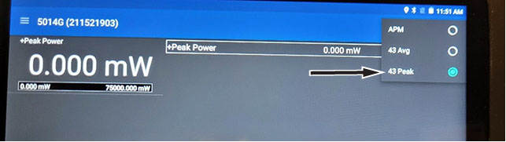
- Click the menu bar on the top left corner of the screen and select Configuration.
Figure 6. Selecting Configuration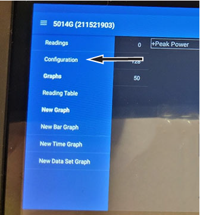
- Select Smoothing(0,8,16,32,64,128).
Figure 7. Selecting Smoothing(0,8,16,32,64,128)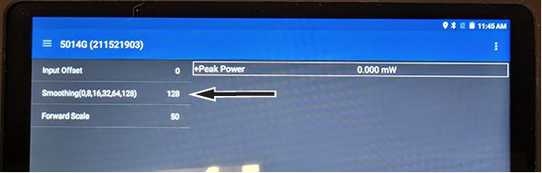
- Select a smoothing level value.
Figure 8. Specifying a smoothing level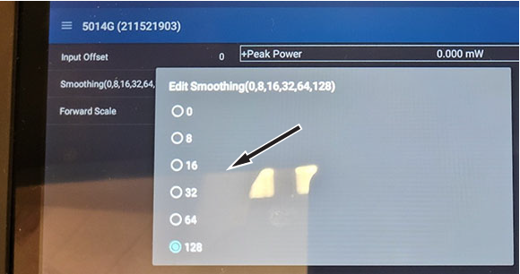
- Locate the Element Offset Factors card in the kit and find the offset for the procedure being run.
This output is used to make sure of an accurate measurement.
Figure 9. Example Element Offset Factors card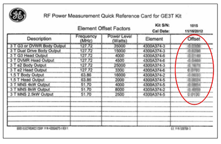
- Click the menu bar on the top left corner of the screen and select Configuration.
- Select Input Offset and enter the value found on the Element Offset Factors card.
Figure 10. Selecting Input Offset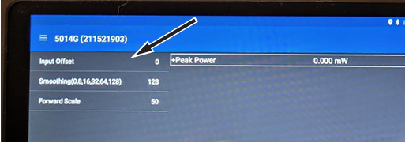
- Select Forward Scale.
Figure 11. Selecting Forward Scale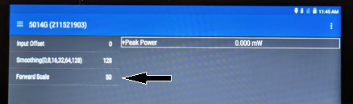
- Set the range by entering the value listed in Bird TT800V wattmeter ranges, based on calibration type, and press ENTER.
Table 1. Bird TT800V wattmeter ranges| Calibration type | Range |
|---|
| Body Channel 1 | 50,000 |
| Body Channel 2 | 50,000 |
| Head Channel | 5,000 |
- Click the menu bar on the top left corner of the screen and select Readings.
Figure 12. Selecting Readings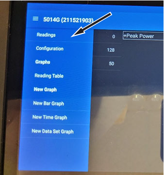
Results
The meter is now ready to calibrate the RF amplifier output power.Note The units will automatically update when power is being measured.
Figure 13. Configuration complete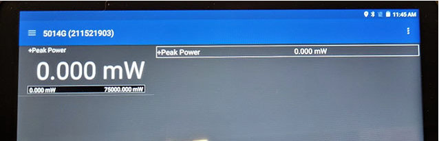